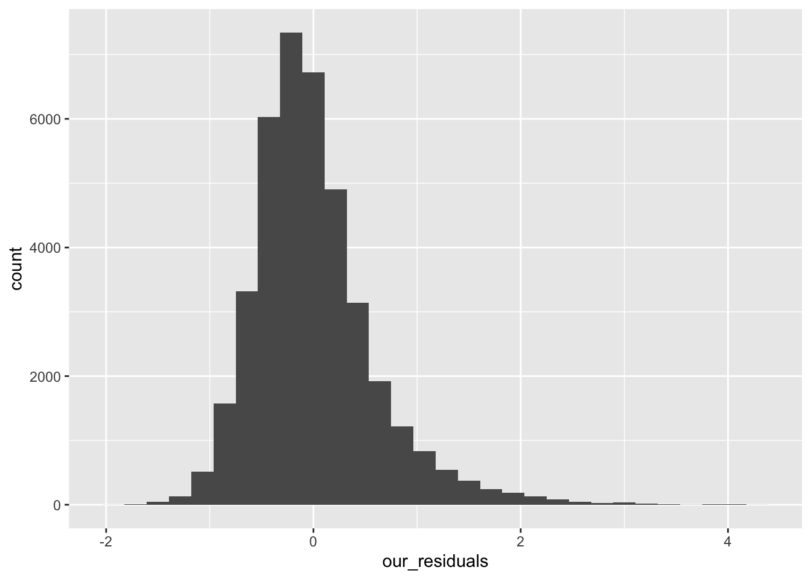

install.packages(c("readxl", "car", "lme4", "lmerTest", "performance", "Matrix", "moments", "MASS"), repos = "http://cran.rstudio.com/")Regression assumptions
Objective
Students will check three assumptions of regression analysis.
Assumptions
As mentioned in our lesson on linear regression, Levshina (2015, ch. 7) presents seven assumptions of linear regression. In this lesson, we’ll look at three assumptions in detail:
There shouldn’t be any multicollinearity of explanatory variables.
The residuals should be normally distributed, with a mean of zero.
The residuals of the model should vary constantly.
No multicollinearity of explanatory variables
Multicollinearity refers to when two or more explanatory variables are correlated with each other. What that means is whether one explanatory variable can be predicted by one or more other variables. Multicollinearity is a problem for regression analysis and should be addressed. Fixing that problem may include removing one or more correlated variables, or using a multidimensional reduction algorithm like Principal Components Analysis. That’s a topic for another lesson.
Getting back to simply detecting the level of multicollinearity, if any, that is present among explanatory variables, as presented in the previous lesson, we can use Variance Inflation Factors (VIF). Different rules of thumb exist about the threshold below which VIFs should be in order to trust the results of a regression model. Levshina (2015, p. 160) mentions that some researchers propose 10 as the threshold, while other researchers propose a stricter threshold of 5. Winter (2019, p. 114) mentions that he has used 3 or 4 in previous studies as the threshold.
Let’s load up the dataset created by Dr. Brown to write this article about the effect of cumulative exposure to fast speech on the duration of words in English, as seen in the Buckeye Corpus. First, let’s make sure we have the third-party R packages that we’ll need:
Now, download the “dataset_FRC_Buckeye.xlsx” from the LMS and load it up into our R session:
library("readxl")
buck <- read_excel("/Users/ekb5/Documents/LING_440/datasets/dataset_FRC_Buckeye.xlsx", sheet = "dataset")Now, let’s fit a mixed-effects linear regression:
library("lmerTest")Loading required package: lme4Loading required package: Matrix
Attaching package: 'lmerTest'The following object is masked from 'package:lme4':
lmerThe following object is masked from 'package:stats':
stepm1 <- lmerTest::lmer(
scale(wd_dur) ~ # use the raw word durations
scale(n_phon)+
scale(log(wd_freq))+
scale(spch_rate)+
scale(frc)+
scale(frc):scale(log(wd_freq))+ # interaction term
scale(forw_predict)+
pre_mention+
scale(dist_end_iu)+
scale(iu_len_wds)+
scale(back_predict)+
scale(frc):scale(wd_freq)+ # interaction term
(1 + frc | file) +
(1 | wd_upper),
control = lmerControl(optimizer ="optimx", calc.derivs = F, optCtrl = list(method = "nlminb", starttests = F, kkt = F)),
data = buck)Loading required namespace: optimxNow, let’s check the level of multicollinearity of the explanatory variables. First, we’ll need to remove the interaction terms in the model and then ask for the VIFs:
library("tidyverse")── Attaching core tidyverse packages ──────────────────────── tidyverse 2.0.0 ──
✔ dplyr 1.1.4 ✔ readr 2.1.4
✔ forcats 1.0.0 ✔ stringr 1.5.1
✔ ggplot2 3.4.4 ✔ tibble 3.2.1
✔ lubridate 1.9.2 ✔ tidyr 1.3.1
✔ purrr 1.0.2
── Conflicts ────────────────────────────────────────── tidyverse_conflicts() ──
✖ tidyr::expand() masks Matrix::expand()
✖ dplyr::filter() masks stats::filter()
✖ dplyr::lag() masks stats::lag()
✖ tidyr::pack() masks Matrix::pack()
✖ tidyr::unpack() masks Matrix::unpack()
ℹ Use the conflicted package (<http://conflicted.r-lib.org/>) to force all conflicts to become errorsm1 %>%
# remove interaction terms before getting VIFs
update(~. - scale(log(wd_freq)):scale(frc)) %>%
update(~. - scale(frc):scale(wd_freq)) %>%
# calculate VIFs
car::vif() scale(n_phon) scale(log(wd_freq)) scale(spch_rate) scale(frc)
1.100819 1.151842 1.071580 1.020065
scale(forw_predict) pre_mention scale(dist_end_iu) scale(iu_len_wds)
1.076477 1.004757 1.984318 1.939911
scale(back_predict)
1.020173 Marvelous! All the VIFs are below the thresholds mentioned above. If this were not the case, we’d need to inspect the explanatory variables in details to figure out if we would be justified in removing the variable with the highest VIF, or somehow combining it with another variable. If that’s not possible, we might look into Principal Components Analysis.
Residuals should be normally distributed
The next assumption of regression analysis that we’ll check here is whether the residuals are normally distributed. Let’s try three different things to determine this.
First, a histogram of the residuals:
library("tidyverse")
tibble(our_residuals = residuals(m1)) %>%
ggplot(aes(our_residuals))+
geom_histogram()`stat_bin()` using `bins = 30`. Pick better value with `binwidth`.
Talk about right skew, amirite?! Yeah, from just the histogram we can safely say that the residuals are not normally distributed. But for good measure, let’s calculate the skewness score for the residuals. Skewness is a measure of how symmetrical a distribution is, not necessary a measure of normality (e.g., a perfectly symmetrical bimodal distribution would have a skewness score of 0):
m1 %>%
residuals() %>%
moments::skewness()[1] 1.261311The rule of thumb that was taught to Dr. Brown is that a skewness score between -0.5 and 0.5 is good enough to call a set of number symetrical distributed. However, that is not the case here as our skewness score is ~1.26.
A third way to determine normality of numbers is with the Shapiro-Wilk test. A drawback of that test is that, the larger the number of data points, the more likely the test is to detect a non-normal distribution. It is because of this fact that the test simply refuses to run if there are more than 5,000 observations, which is the case here. However, for good measure, here’s the code:
m1 %>%
residuals() %>%
shapiro.test()While we’re here, let’s calculate the AIC score for this model with raw word duration so that we can compare it to the AIC for the model with Box-Cox transformed response variable below. Also, let’s get the conditional \(R^2\) and the marginal \(R^2\). The conditional \(R^2\) tells us how much of the variance in the response variable is explained by both the random effects and the fixed effects, while the marginal \(R^2\) tells us how much of the variance in the response variable is explained by only the fixed effects.
AIC(m1)[1] 73649.04performance::r2_nakagawa(m1)# R2 for Mixed Models
Conditional R2: 0.667
Marginal R2: 0.434Because the residuals are not normally distributed, let’s do a Box-Cox transformation of the response variable:
# define a function to do the Box-Cox transformation
boxcox_transform <- function(input_vector) {
# param input_vector: a vector of numeric values
# return: a list of two elements:
# lambda: the lambda chosen by the Box-Cox algorithm
# output_vector: a vector of Box-Cox transformed values
bc <- MASS::boxcox(input_vector ~ 1, lambda = seq(-3, 3, 1/100), plotit=FALSE)
lambda <- bc$x[which.max(bc$y)]
output_vector <- (input_vector ^ lambda - 1) / lambda
output <- list(lambda = lambda, output_vector = output_vector)
return(output)
}
# Get Box-Cox transformed word durations and the corresponding lambda
bc_list <- buck %>%
pull(wd_dur) %>%
boxcox_transform()
cat("The lambda is:", bc_list$lambda)The lambda is: 0.24# Make a new column with the Box-Cox transformed word durations
buck <- buck %>%
mutate(wd_dur_bc = bc_list$output_vector)Now, let’s fit another regression model with the Box-Cox transformed response variable (wd_dur_bc):
# linear regression with Box-Cox transformed word durations
f2 <- scale(wd_dur_bc) ~ # use the Box-Cox transformed word durations
scale(n_phon)+
scale(log(wd_freq))+
scale(spch_rate)+
scale(frc)+
scale(frc):scale(log(wd_freq))+ # interaction term
scale(forw_predict)+
pre_mention+
scale(dist_end_iu)+
scale(iu_len_wds)+
scale(back_predict)+
scale(frc):scale(wd_freq)+ # interaction term
(1 + frc | file) +
(1 | wd_upper)
m2 <- lmerTest::lmer(formula = f2, control = lmerControl(optimizer ="optimx", calc.derivs = F, optCtrl = list(method = "nlminb", starttests = F, kkt = F)),
data = buck)Now, let’s look at the residuals of this second Box-Cox-transformed model:
tibble(our_residuals = residuals(m2)) %>%
ggplot(aes(our_residuals))+
geom_histogram()`stat_bin()` using `bins = 30`. Pick better value with `binwidth`.That’s more like it! Yeah, that looks like a nice bell curve. Let’s calculate the skewness score too:
m2 %>%
residuals() %>%
moments::skewness()[1] 0.479374The skewness score (i.e., ~0.479) falls within the rule of thumb. Cool! Let’s keep going.
And let’s calculate the AIC and the \(R^2\) scores of this second Box-Cox transformed model:
AIC(m2)[1] 73520.87performance::r2_nakagawa(m2)# R2 for Mixed Models
Conditional R2: 0.630
Marginal R2: 0.437Wouldn’t you know it! The AIC has gone down, which is a good thing, as the lower the AIC, the better. The \(R^2\) scores have not changed much.
Residuals vary constantly
Another assumption of regression analysis is that the residuals vary constantly, called homoscedasticity. The opposite is called heteroscedasticity is the condition when the residuals do not vary constantly.
A good way to determine whether a model has homoscedasticity or heteroscedasticity is by creating a scatterplot of the residuals of the model on one axis with the fitted (aka. predicted) values of the response variable of the model on the other axis. If the cluster of dots looks like a funnel or a megaphone (i.e., little spread to large spread when moving from left to right, or vice versa) or an American football (i.e., little to large to little spread when moving from left to right), you have heteroscedasticity, which is a problem that needs to be fixed. (Here’s a good blog post on R-bloggers about detecting heteroscedasticity and how to fix it.)
Let’s use our Box-Cox transformed model from above to see create a scatterplot with the residuals and the predicted (aka. fitted) values:
temp_df <- tibble(
our_residuals = residuals(m2),
our_fitted = fitted(m2))
temp_df %>%
ggplot(aes(our_residuals, our_fitted))+
geom_point()Uh-oh! We have a stubby American-football-shaped cluster of dots. This suggest heteroscedasticity.
As a redemy, we would need to use a bootstrapping approach, which is a topic for another day. See Dr. Brown article in Language Variation and Change.